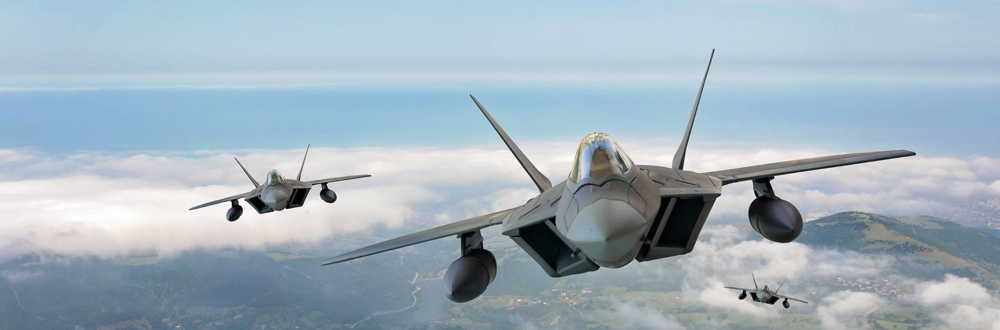
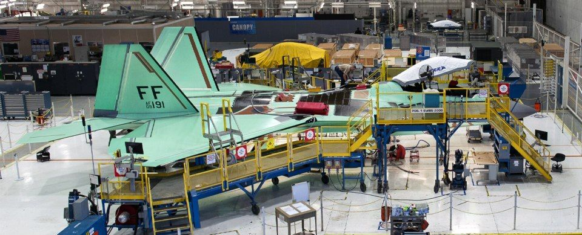

One of the U.S. Air Force’s most critical and time-consuming tasks is keeping its fleet of aircraft well maintained and operational. With some planes, such as the B-2 Bomber and F-22 Raptor, that includes keeping the radar-absorbent coating clean and smooth.
On the twin-engined F-22s, maintaining the coating, which helps maximize its stealthiness and survivability, is particularly difficult on the air inlet ducts. The inlets ensure smooth air flows into the engines despite turbulent air coming at the ducts from several directions. Small objects, possibly even hail, being sucked into the engine at high speed can likely put some scratches in the inlet’s surface finish.
To keep the plane performing at its best, the Air Force refurbishes the ducts periodically, sanding off the weathered coating and applying a new one. Since 2016, the Air Force has been using robots from Aerobotix to handle these chores.

Aerobotix received funding from the Air Force’s Small Business Innovation Research and Small Business Technology Transfer programs to develop its robotic painting system. On the F-22, it can restore the performance coatings on inlet ducts far more quickly, cost efficiently, and accurately than doing so by hand.
The automated painting system for the F-22s uses two robots working at the forward and aft ends of the ducts to sand and spray-coat them. Three of these systems have been installed at the F-22 Depot at the headquarters of the Ogden Air Logistics Complex at Hill Air Force Base, Utah.
“Our robotic technology can paint inlet ducts using only about 300 hours of labor, rather than the 1,600 hours it takes to do it manually,” says project manager Bret Benvenuti, a senior robotics engineer at Aerobotix. “That’s a labor saving of around 80%, so it really helps solve the challenge of getting these aircraft back into service quicker. And we estimate that since 2016, we’ve helped the Air Force save $8.8 million, $220,000 per aircraft, in maintenance costs.